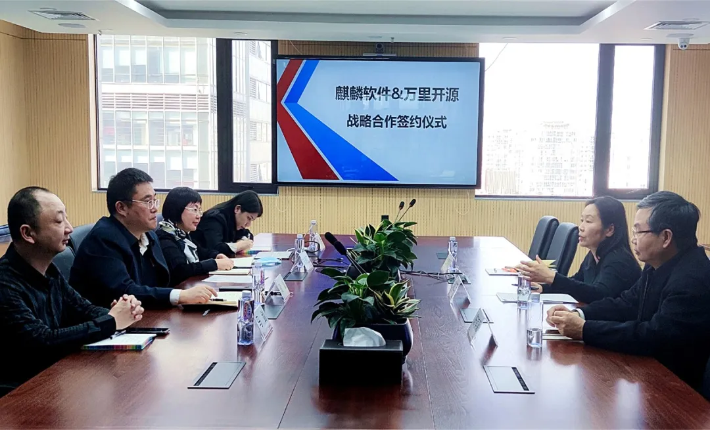

生态 | 万里数据库与麒麟软件达成战略合作 开启生态共荣新篇章！
数据东风乘万里，麒麟遨天共繁荣。
4月6日，万里数据库总经理郑红云带领技术专家、市场团队一行与麒麟软件签署战略合作协议。麒麟软件高级副总裁高巍带领战略合作、技术及业务拓展团队出席会议仪式。此次签约仪式，预示未来双方将在技术、产品、市场等多维度展开战略合作，强强联合、优势互补、合作共享，共同推动国产软硬件生态及信创产业繁荣发展。
战略合作

万里数据库总经理郑红云与麒麟软件高级副总裁高巍发表讲话，双方领导均认为，万里数据库与麒麟软件的合作是合作共赢、资源互补的必然结果。后期，双方将成立联合工作组，发挥各自操作系统与数据库领域优势，集结人才、项目等优势资源合力攻关，并借助openEuler等社区资源，针对金融、能源、运营商、安全等重点行业进行开拓，寻找业务突破点，保障项目高质量、顺利推进及交付，以期打造各行业标杆范例。
1
2
▲万里数据库总经理郑红云发言（左）
麒麟软件高级副总裁高巍发言（右）
2021年是“十四五”开局之年，信创产业作为“十四五”发展目标的重要抓手，对于完善国产软硬件生态、发展数字新基建意义重大。万里和麒麟同为产业链上重要一环，有义务也有责任为国产生态及信创产业贡献全力。
未来，双方将秉持着优势互补、信息共享、通力合作的双边原则，构建合作发展的新平台、新机制，统筹双方技术、市场、营销各方优势资源，在关键领域实现产品融合、技术优化、应用示范，联合打造“KyOS+GreatDB”一栈式解决方案及标杆案例，加速国产生态及信创产业各端的安全可控与自主系统化，提升行业整体竞争力。
关于万里数据库
万里数据库2000年成立至今，始终专注国产、自主可控数据库的研发，打造了新一代分布式数据库产品。公司早期与MySQL进行技术合作，拥有二十余年数据库自主研发与应用经验，产品广泛服务于金融、能源、运营商、政府等多个行业核心系统，累计部署超500个业务场景，合作客户包括光大银行、国家电网、中国移动、中国联通、山东移动等金融、能源、运营商行业头部单位，产品功能、性能、稳定性、易用性广受市场认可。
GreatDB
关于麒麟软件
麒麟软件以安全可信操作系统技术为核心，打造高安全高可靠操作系统和解决方案。2019年，麒麟软件荣获国家科技进步一等奖，旗下操作系统产品连续10年位列中国Linux市场占有率第一名，尤其公司核心产品银河麒麟服务器操作系统V10性能强劲，助力“鹏城云脑II”斩获多项国际大奖，向世界充分展现了中国基础软件强劲的研发实力和自主创新能力。
KYLINSOFT
推荐阅读1.生态 | 万里数据库与电科云达成全面战略合作 共推信创产业生态做大做强
2. 生态|万里数据库加入绿色计算产业联盟，共推产业发展
3. 热点 | 聚焦两会科技创新 万里数据库交出“数据库创新产品奖”完美答卷


扫码二维码
关注公众号